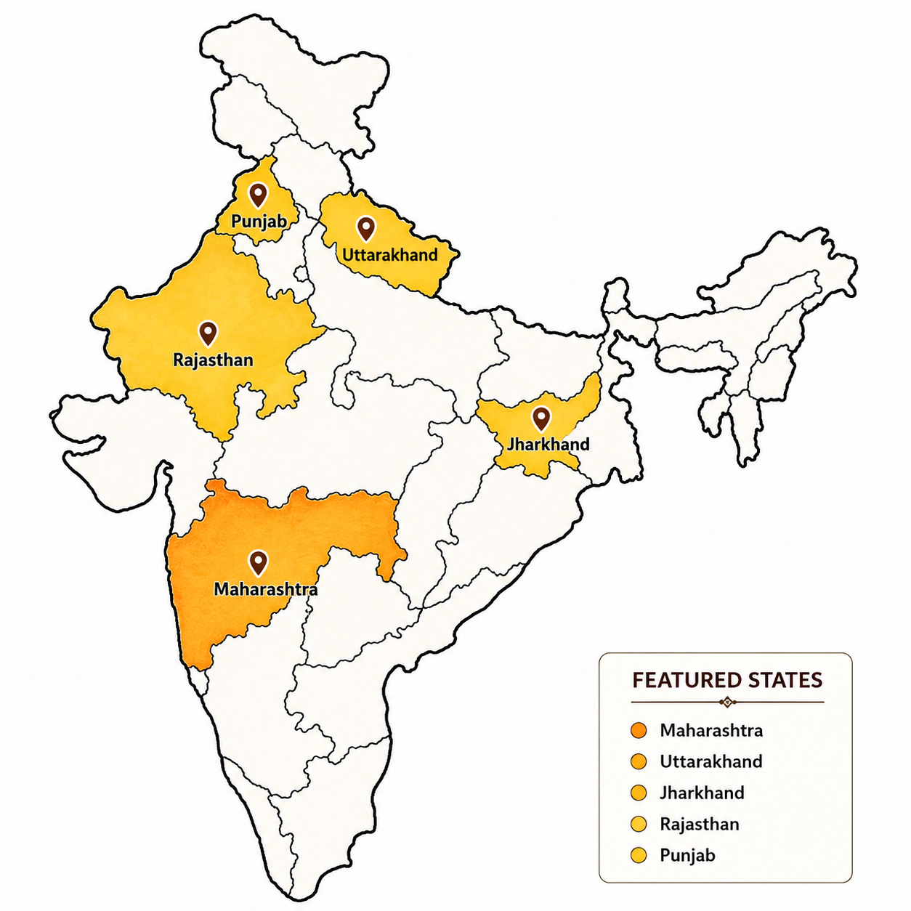

Living Philosophy
TRADITIONS
Ancient philosophies, familial devotion, and eternal values that have anchored Indian civilization and community life across millennia.
Explore the diverse cultures, heritage and traditions that shape India.

India is a land of timeless traditions, diverse cultures and rich heritage that has flourished for thousands of years. From ancient wisdom to vibrant festivals, from magnificent monuments to intricate art forms, every part of India tells a unique story.
Explore, learn and celebrate the legacy that continues to live through generations.
A living expression of traditions, people and everyday life.
Ancient philosophies, familial devotion, and eternal values that have anchored Indian civilization and community life across millennia.

Soulful songs of rural joy, desert ballads, devotional chants, and pastoral rhythms.

Natyashastra traditions embodying divine storytelling through Mudras, Bhavas, and Taals.
Royal silk sarees, handcrafted Kurtas, vibrant turbans, and intricate Phulkari embroidery.
A culinary tapestry blending Ayurvedic herbs, aromatic spices, and regional traditional feasts.

Ancient Vedic Sanskrit, Brahmi epigraphs, and over 19,500 dialects across the subcontinent.

Sacred evening Ganga Aartis, morning chants, and vibrant milestone rites celebrating nature and life.
Stories preserved in stone, art and architecture.


Festivals that bring communities, traditions and stories together.


Traditional Indian art forms that carry the identity of their communities.